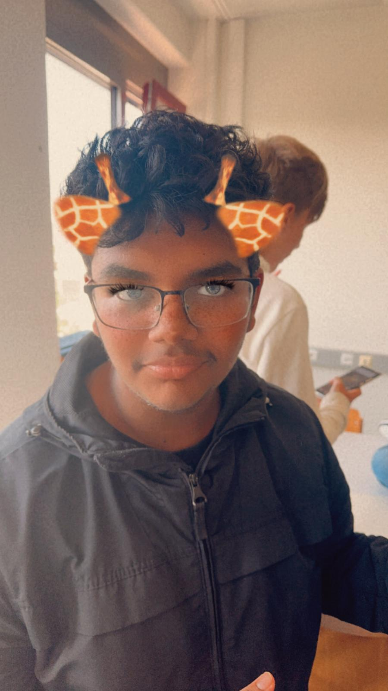
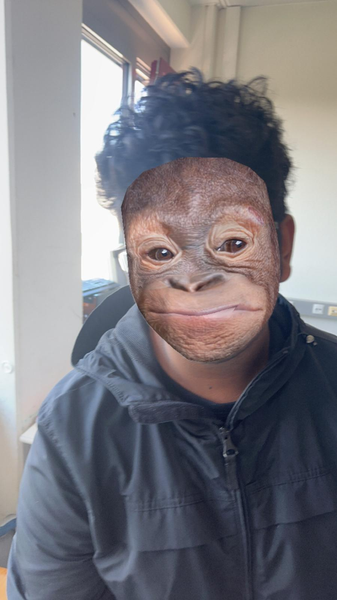
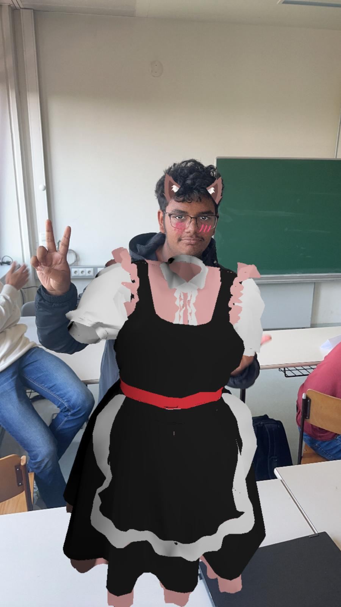

Rudi's Zoo
Rudi's FAVORITE animals!
 My favorite animal is Dog
My favorite animal is Dog
I am Rudi and I really like to code on VSCode!
I LOVE programming, I spent 62 hours in rider in 3 days! This the Link to My github if you are interested!
Anyways my name is Rudi and I am a cute dog.
Now i want to show you my FAVORITE animals.

align="right"
I like the Giraffe, because it's very tall.
I also like monkey a lot because they climb very fast and eat bananas!

